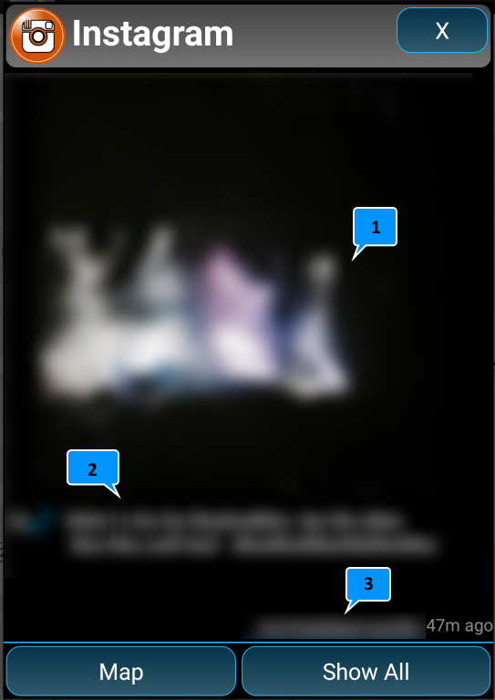
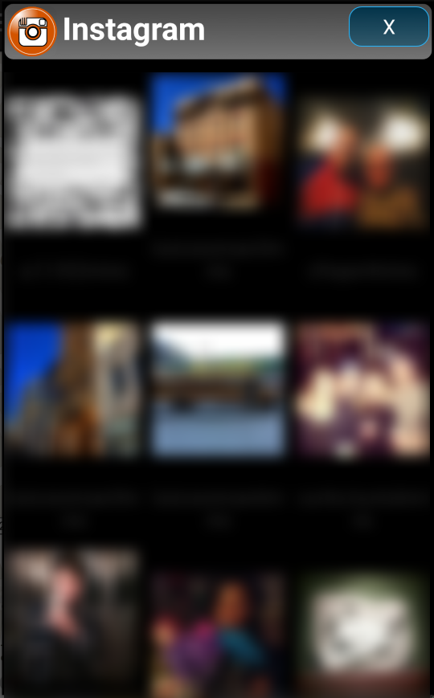

Instagram:
All locations for Instagram feature have been randomized to protect the privacy of the posters. It should be taken as approximate only. This feature can only be refreshed once every 15 minutes. To refresh the data, follow the steps below.
deselect Instagram feature
1: open feature drawer
2: de-select twitter feature
3: close feature drawer. This will remove twitter from the map.
re-select
4: open feature drawer
5: select twitter feature
6: close feature drawer. this will map the new data from twitter.
Detail Instagram info window contains the following:

1: Imstagram image
2: Description of the image
3: Poster's name
4: Elapsed time.
5. "Map" button: location where the posting was made. (approx location only).
6: "Show All" Button, will display all Instagram posting within the 5 km radius of your current position. (Max 100). Tap on a post within the list to see its detail.
